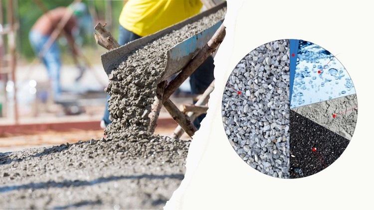

What is concrete mix design?
Concrete mix design is the process of finding the right proportions of cement, sand, and aggregates for concrete to achieve the target strength in structures. It involves various steps, calculations, and laboratory testing to find the right mix proportions. This process is usually adopted for structures that require higher grades of concrete such as M25 and above and large construction projects where the quantity of concrete consumption is huge.
Benefits of concrete mix design include providing the right proportions of materials, making the construction economical in achieving the required strength of structural members. As the quantity of concrete required for large constructions is huge, economy in the quantity of materials such as cement makes the project construction economical. Concrete mix design of M20, M25, M30, and higher grades of concrete can be calculated.
